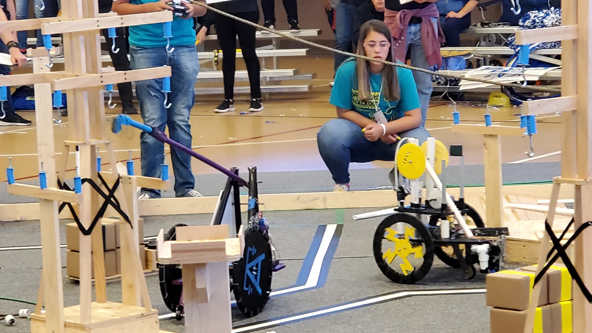
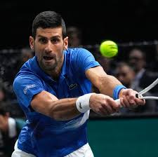
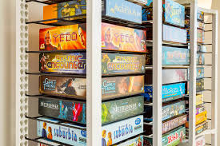

Throughout my life I have participated in a number of extracurricular activities foremost among them is a STEM program called Destination Imagination. I have participated in Destination Imagination since elementary school and what is unique about it compared to other robotics challenges is that it prioritizes creative problem solving. Its challenges often have looser rule sets than other robotics challenges intending for an out of the box solution. The other part of this challenge is off course building the actual technical elements. This blend of developing technical skills and learning to solve problems in new ways is what has kept my interest in this program.

When it comes to physical activities I participated in a variety of sports during elementary school including: soccer, tennis, hockey and fencing. In middle school I began to primarily play soccer and tennis and just last year I dropped soccer to focus solely on tennis. Tennis is a very physical sport as you have to be sprinting to the best of your ability during long matches but it also has a mental side. This mental side involves hitting to strategic locations, seeing where your opponent is weak and predicting their shots, in tennis this has to be done quickly with no assistance from a coach. This balance of physical and mental difficulty is what I love abouttennis and why I have continued to play since elementary school.

One of my biggest hobbies is board games. From a young age I have played them with my family and I love how they, eure style games in particular, require strategical actions. Winning is about coming up with the strategy to get the most points for yourself while maneuvering around your opponents and hindering them when possible. I love how rewarding it is to find the best strategy or to out maneuver your opponent. In addition, the process of coming up with a new strategy every game as board elements change has developed my strategic thinking skills.
